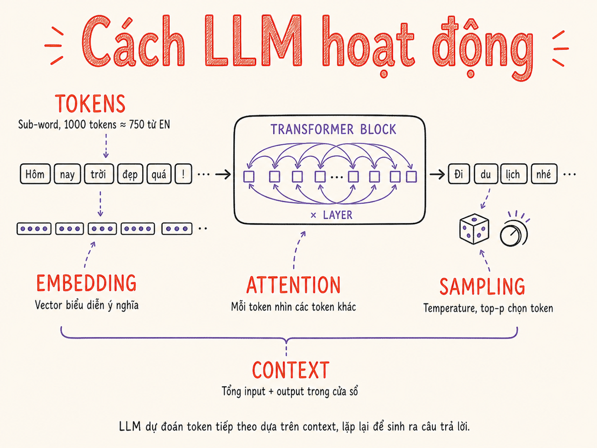

Cách LLM hoạt động (đủ để engineer hiểu)
Tokenization, embeddings, transformer & attention, sampling parameters, context window — tất cả những gì bạn cần biết để làm việc hiệu quả với LLMs mà không cần bằng ML.

3.1 Tokenization
Trước khi LLM xử lý bất cứ thứ gì, văn bản phải được chuyển thành tokens — đơn vị cơ bản nhất mà model "nhìn thấy". Điều quan trọng cần hiểu ngay: token ≠ từ và token ≠ ký tự.
Token thường là subword unit — một mảnh của từ, một từ nguyên, hoặc
đôi khi chỉ là một ký tự hoặc dấu câu. Ví dụ trong tiếng Anh:
"unbelievable" có thể thành ["un", "believ", "able"] —
3 tokens, 1 từ. Ngược lại, "the" = 1 token, "AI" = 1 token.
Thuật toán Tokenization phổ biến
- BPE (Byte-Pair Encoding): Khởi đầu từ từng ký tự, merge cặp hay gặp nhất lặp đi lặp lại cho đến khi đủ vocab size. Dùng bởi GPT-2, GPT-3, GPT-4 (tiktoken), Llama.
- SentencePiece / Unigram: Approach khác — train probabilistic model để chọn segmentation tối ưu. Dùng bởi T5, LLaMA (SentencePiece + BPE), Gemma.
- WordPiece: Tương tự BPE nhưng maximize likelihood thay vì frequency. Dùng bởi BERT và các encoder models.
Tại sao điều này quan trọng với AI Engineer?
Cost = số tokens, không phải số từ
APIs charge theo tokens. Một prompt 1000 từ tiếng Anh ≈ 1300 tokens. Cùng nội dung đó bằng tiếng Việt có thể lên đến 2000–2500 tokens vì tiếng Việt tokenize kém hiệu quả hơn (ít text VI trong pre-training data → vocab ít).
Context limit tính bằng tokens
"Context 200k" = 200.000 tokens, không phải từ hay ký tự. Một trang A4 text ≈ 500 từ ≈ 650 tokens (EN) ≈ 1000-1200 tokens (VI). Tính toán sai có thể gây lỗi context overflow bất ngờ.
Ước lượng nhanh
| Đơn vị | Tokens (EN) | Tokens (VI) | Ghi chú |
|---|---|---|---|
| 1 từ tiếng Anh thông thường | ≈ 1.3 | — | "hello" = 1, "unbelievable" = 3 |
| 1 từ tiếng Việt | — | 2–4 | Dấu, tổ hợp âm tiết riêng lẻ |
| 1 trang A4 (~500 từ EN) | ≈ 650 | ≈ 1100 | Ước lượng thực tế |
| 1 dòng code Python | ≈ 5–15 | — | Tuỳ indent & identifiers |
| 1000 tokens | ≈ 750 từ | ≈ 400–500 từ | Rule of thumb thường dùng |
Câu hỏi nổi tiếng: "Có bao nhiêu chữ R trong từ 'strawberry'?" — LLMs thường đếm sai (đáp án: 3).
Nguyên nhân: model không thấy ký tự, chỉ thấy tokens. "strawberry" tokenize thành
["str", "aw", "berry"] — model phải "nhớ" rằng "str" có R, "aw"
không có, "berry" có R — rất dễ nhầm. Đây là lý do character-level tasks (đánh vần,
counting letters) thường không đáng tin cậy với LLMs.
Demo này chia text thành chunks ~3-4 ký tự để minh họa khái niệm tokenization. Không phản ánh chính xác tokenizer thực tế (BPE), nhưng cho thấy tại sao token ≠ từ.
3.2 Embeddings
Sau khi tokenize, mỗi token được chuyển thành một vector số (embedding) — thường là 768 đến 4096 chiều. Vector này là cách model "hiểu" nghĩa của token trong không gian toán học.
Điều kỳ diệu: semantic similarity = khoảng cách vector nhỏ.
"Paris" và "France" gần nhau hơn "Paris" và "banana" trong embedding space.
Phép toán nổi tiếng: king − man + woman ≈ queen.
Hai loại embeddings AI Engineer cần biết
Internal token embeddings
Input layer của LLM. Mỗi token trong vocab có một embedding vector được học trong quá trình pre-training. Đây là "từ điển" riêng của model. Bạn không dùng trực tiếp — chỉ hiểu để biết cách model "đọc" input.
Dedicated embedding models
Models chuyên biệt để encode text thành vector — dùng cho semantic search,
RAG retrieval. Ví dụ: text-embedding-3-large,
voyage-3, BGE-M3.
Khác với LLMs: không generate text, chỉ produce vector.
Quy trình cơ bản: chunk documents → embed từng chunk → lưu vào vector DB. Khi có query: embed query → tìm chunks gần nhất (cosine similarity) → đưa vào LLM context. Chất lượng embedding model ảnh hưởng trực tiếp đến recall — không kém phần quan trọng so với LLM chính.
3.3 Transformer & Attention
LLMs hiện đại đều dựa trên kiến trúc Transformer (Vaswani et al. 2017, "Attention is All You Need"). Bạn không cần hiểu mọi chi tiết toán học, nhưng cần biết những khái niệm sau để ra quyết định đúng khi build.
Self-Attention — cơ chế cốt lõi
Attention cho phép mỗi token "nhìn" tất cả các token khác trong context và quyết định token nào quan trọng nhất để predict token tiếp theo. Đây là lý do LLMs xử lý ngữ nghĩa và coreference tốt hơn RNNs trước đây — không có "forgetting" khi sequence dài.
Multi-head attention: Chạy nhiều attention "heads" song song, mỗi head học các pattern khác nhau (syntax, semantics, positional patterns). Kết quả được concat lại. Model lớn hơn = nhiều heads và layers hơn.
Autoregressive generation
LLMs generate text theo kiểu autoregressive: predict một token tại một thời điểm, token mới được thêm vào context, rồi predict token kế tiếp. Vòng lặp này tiếp tục cho đến khi gặp stop token hoặc đạt max_tokens.
KV Cache và Prompt Caching
Tính toán attention rất tốn kém. Để tránh tính lại, model cache Key-Value matrices (KV Cache) của các tokens đã xử lý. Khi generate token tiếp theo, chỉ cần tính KV cho token mới — các token cũ đã cached.
Prompt Caching của Anthropic/OpenAI là extension của ý tưởng này lên level API: nếu prefix của prompt giống nhau giữa các requests, provider cache KV computation — giảm đến 90% cost và latency cho phần cached. Rất có giá trị khi bạn có system prompt dài cố định và nhiều conversations.
Đặt system prompt và bất kỳ context dài cố định nào (documents, personas, instructions)
ở đầu prompt và giữ nguyên. Phần thay đổi (user messages) đặt cuối.
Với Anthropic Claude: dùng cache_control: {type: "ephemeral"} trên block cần cache.
Tại sao LLMs không "biết" vị trí tuyệt đối của token?
Transformer gốc không có khái niệm thứ tự — self-attention xử lý tất cả tokens song song. Để biết "token này ở vị trí thứ mấy", người ta thêm positional encoding vào embedding. Các model hiện đại dùng RoPE (Rotary Position Embedding) hoặc ALiBi để hỗ trợ context dài và extrapolate tốt hơn ra ngoài training length. Kỹ thuật YaRN (Yet another RoPE extensioN) và rope_scaling cho phép extend context vượt training length không cần train lại toàn bộ model.
Mixture of Experts (MoE) — kiến trúc cho model lớn hiệu quả
Thay vì kích hoạt toàn bộ tham số cho mỗi token, MoE chia model thành nhiều "experts" (feed-forward sub-networks) và chỉ kích hoạt một tập nhỏ cho mỗi token. Kết quả: model có tổng tham số lớn nhưng active parameters mỗi forward pass nhỏ hơn nhiều.
Các model MoE tiêu biểu 2025:
- DeepSeek-V3: 671B tổng tham số, chỉ 37B active mỗi token. Dùng Multi-head Latent Attention (MLA) để giảm KV cache, và DeepSeekMoE routing.
- Llama 4 Scout: 17B active / 16 experts, context window 10M tokens, chạy được trên 1 GPU H100.
- Llama 4 Maverick: 17B active / 128 experts, benchmark ngang DeepSeek-V3 với active params thấp hơn 2x.
Với AI Engineer: MoE ảnh hưởng đến inference cost và latency — model 671B MoE có thể chạy rẻ hơn dense model 70B nếu so sánh theo active params. Khi chọn self-hosted model, luôn hỏi "total params" vs "active params per token".
Speculative decoding — tăng tốc inference 2–3x không đổi output
Speculative decoding dùng một draft model nhỏ, nhanh để đề xuất nhiều tokens cùng lúc, sau đó target model lớn verify song song trong một forward pass. Nếu draft tokens được accept, throughput tăng 2–3x mà không thay đổi output quality.
Đây là kỹ thuật đã vào production chuẩn (2024–2025): tích hợp native trong vLLM, SGLang, TensorRT-LLM. NVIDIA công bố 3.6x throughput improvement trên H200 GPU. Bạn không cần implement thủ công — chọn serving framework hỗ trợ là đủ.
3.4 Sampling — cách model chọn token tiếp theo
Sau khi Transformer tính xong, output là một vector logits — một số thực cho mỗi token trong vocab (thường 32K–128K tokens). Softmax chuyển chúng thành probability distribution. Bước cuối: sampling — chọn một token từ distribution đó.
Các tham số bạn truyền vào API control chính xác bước sampling này. Hiểu chúng = kiểm soát được behavior của model.
Các tham số sampling quan trọng
| Tham số | Ý nghĩa | Range | Rule of thumb |
|---|---|---|---|
temperature |
Scale logits trước softmax. Cao → distribution phẳng → creative/random. Thấp → distribution nhọn → focused/deterministic. | 0 – 2 | 0 cho code/JSON/structured; 0.7–1.0 cho creative writing; 1.0 default "balanced" |
top_p (nucleus sampling) |
Chỉ sample từ top tokens có cumulative probability ≤ p. Loại bỏ các tokens unlikely bất thường. | 0 – 1 | 1.0 (disabled) hoặc 0.95 thường tốt. Không dùng cùng temperature và top_p một lúc — chọn một. |
top_k |
Chỉ sample từ k tokens có probability cao nhất. Đơn giản hơn top_p. | 1 – vocab_size | Ít dùng trong inference API; phổ biến hơn trong local inference (Ollama, llama.cpp). top_k=1 = greedy. |
frequency_penalty |
Giảm probability của token đã xuất hiện, tỷ lệ với số lần đã xuất hiện. Chống lặp từ. | 0 – 2 | 0.1–0.5 cho long-form content để tránh repetition. Quá cao → output bất thường. |
presence_penalty |
Giảm probability của token đã xuất hiện ít nhất một lần (flat penalty). Khuyến khích diversity. | 0 – 2 | Dùng thay frequency_penalty khi muốn đa dạng topic hơn là chống lặp từ. |
stop |
Mảng strings — model dừng ngay khi generate ra một trong các strings này. | Array of strings | ["```", "\n\n", "Human:"]. Rất hữu ích để kiểm soát output format. |
temperature=0 gần với greedy decoding (chọn token có probability cao nhất),
nhưng không đảm bảo output giống nhau hoàn toàn 100% do floating-point
non-determinism ở GPU và batching. Để reproducibility tốt hơn, dùng kết hợp với seed
(OpenAI) hoặc top_p=0 (nếu API cho phép).
Di chuyển slider để thấy temperature ảnh hưởng thế nào đến distribution xác suất của 5 candidate tokens. Temperature thấp → model "confident" vào token tốt nhất. Temperature cao → model "ngẫu hứng" hơn.
Logits gốc: "fox" = 3.2, "dog" = 2.1, "cat" = 1.8, "rabbit" = 1.0, "banana" = 0.2
3.5 Context Window
Context window (hay context length) là số token tối đa mà model có thể "nhìn" cùng lúc — bao gồm cả input (system prompt + conversation history) và output được generate.
Sự tiến hóa của context window
| Năm | Model | Context | Milestone |
|---|---|---|---|
| 2020 | GPT-3 | 4K tokens | Baseline; 1 đoạn văn dài |
| 2023 | GPT-4 Turbo | 128K tokens | Cả cuốn sách nhỏ; đột phá lớn |
| 2023 | Claude 2.1 | 200K tokens | ~150.000 từ tiếng Anh |
| 2024 | Gemini 1.5 Pro | 1M tokens | 1 giờ video, 11 giờ audio, 700K dòng code |
| 2025 | Gemini 2.5 Pro | 1M–2M tokens | Ra mắt 1M, 2M đang rollout (mid-2025) |
| 2025–2026 | Claude Sonnet/Opus 4.6+ | 1M tokens | GA từ tháng 3/2026; Opus 4.5 ban đầu 200K |
Những điều cần biết về context window
Input ≠ Output tokens
Context window thường chỉ total input+output. Max output tokens thường nhỏ hơn nhiều: GPT-4o max 16K output, Claude Opus/Sonnet 4.x max 64K output (300K qua beta header trên Batch API). Nếu cần generate văn bản dài, plan cho output limit này.
Cost tăng theo token count
Self-attention complexity = O(n²) — 2x context = 4x computation. Cost API cũng tăng theo tokens. Context 1M tokens có thể đắt hơn rất nhiều so với 128K. Dùng RAG thay vì stuffing toàn bộ data vào context.
Ngay cả khi context window lớn, model thường chú ý nhiều hơn đến đầu và cuối context, bỏ sót thông tin ở giữa (Liu et al. 2023, "Lost in the Middle"). Nếu cần model "thấy" thông tin quan trọng, đặt nó ở đầu (system prompt) hoặc cuối (recent user message), không phải ở giữa một đống context dài.
Context window thực sự dùng như thế nào? (Practical breakdown)
Tổng context window = System Prompt + Few-shot examples + Retrieved context (RAG) + Conversation history + User message + Output buffer.
Ví dụ với model 128K: System prompt 2K, retrieved context 30K, history 10K, user message 1K, output buffer 10K → đã dùng 53K. Luôn track token usage và có chiến lược context management (truncation, summarization, sliding window) cho long conversations.
3.6 Tham số API quan trọng
Ngoài sampling parameters, LLM APIs cung cấp nhiều tham số ảnh hưởng đến behavior, cost, và debugging. Đây là những tham số bạn sẽ dùng thường xuyên nhất.
| Tham số | Mô tả | Khi nào dùng |
|---|---|---|
max_tokensNên set luôn |
Giới hạn tokens tối đa cho output. Không set = model generate đến limit → cost cao, latency cao. | Luôn set. Với structured outputs: 500–2K. Long-form: 4K–16K. |
system |
Instructions cho model — persona, format, constraints. Được xử lý trước user messages. | Mọi production app. Đây là nơi bạn control behavior cốt lõi. |
tools / functions |
Định nghĩa các functions mà model có thể gọi. Kích hoạt tool use / function calling. | Khi build agents, khi cần model extract structured data, hoặc trigger external actions. |
response_format |
OpenAI: {type: "json_object"} hoặc json_schema. Đảm bảo output là valid JSON theo schema. |
Khi cần parse output programmatically. Đáng tin cậy hơn "instruct model return JSON" trong prompt. |
seed |
Seed cho random number generator — cùng seed + cùng input → output gần giống nhau hơn (OpenAI). | Testing, debugging, reproducibility. Không 100% deterministic do GPU non-determinism. |
stream |
Trả về tokens ngay khi generate thay vì đợi full response. Dùng Server-Sent Events. | Gần như mọi chat UI — cải thiện perceived latency đáng kể. |
logprobs |
Trả về log-probability cho mỗi token được generate. Hữu ích cho uncertainty estimation. | Evals, uncertainty calibration, debugging unexpected outputs. |
n |
Generate n completions cho cùng một prompt. Cost nhân n lần. | Best-of-N sampling, evals, diversity exploration. Ít dùng trong production. |
Ví dụ: Gọi API với các tham số trên
// TypeScript / Node.js — Anthropic Claude
import Anthropic from '@anthropic-ai/sdk';
const client = new Anthropic();
const response = await client.messages.create({
model: 'claude-opus-4-7',
max_tokens: 1024,
temperature: 0, // deterministic cho structured output
system: 'You are a data extraction assistant. Always respond with valid JSON.',
messages: [
{ role: 'user', content: userMessage }
]
});
// stream = true thì dùng stream() method:
const stream = client.messages.stream({
model: 'claude-opus-4-7',
max_tokens: 1024,
messages: [{ role: 'user', content: userMessage }]
});
for await (const chunk of stream) {
process.stdout.write(chunk.delta?.text ?? '');
}3.7 Reasoning Models & Test-Time Compute
Từ cuối 2024, một paradigm mới xuất hiện bên cạnh scaling model size: test-time compute scaling — thay vì dùng model lớn hơn, tăng compute lúc inference bằng cách để model "suy nghĩ" nhiều bước trước khi trả lời.
Cơ chế: Chain-of-Thought nội bộ (thinking tokens)
Reasoning models sinh ra một chuỗi internal thinking tokens — quá trình lý luận từng bước, thử đề xuất rồi bác bỏ, kiểm tra lại — trước khi output câu trả lời cuối. Người dùng thường không thấy phần thinking này (hoặc thấy dạng collapsed). Kết quả: hiệu suất đột phá trên toán, code, science benchmarks.
| Model | Nhà phát triển | Đặc điểm |
|---|---|---|
| o1 / o3 | OpenAI | o3 (đầu 2025) đạt kết quả ngang chuyên gia trên toán và khoa học. Internal chain-of-thought không expose API. |
| DeepSeek-R1 | DeepSeek | Open-source. Khả năng reasoning ngang o1 với chi phí thấp hơn 70%. Chain-of-thought visible trong <think> tags. |
| Claude — extended thinking | Anthropic | Dùng thinking: {type: "enabled"}. Trước đây có budget_tokens; từ Claude 4.6 chuyển sang effort parameter (adaptive thinking). |
| Gemini 2.5 Pro (Thinking) | Google DeepMind | Thinking mode tích hợp; điều chỉnh qua thinkingConfig. |
Thinking tokens tốn thêm thời gian và tiền — DeepSeek-R1 generate 10–100x tokens nhiều hơn
so với non-reasoning mode. Dùng reasoning models khi bài toán thực sự cần (math, code review,
complex reasoning). Với lookup, formatting, simple QA — dùng standard mode nhanh hơn và rẻ hơn.
Anthropic đã deprecated budget_tokens trên Claude 4.6+; thay bằng effort
trong adaptive thinking API.
Tóm tắt
- Token ≠ từ ≠ ký tự. Tiếng Việt tốn 2–4x tokens so với tiếng Anh cùng nội dung. Mọi cost, context limit đều tính bằng tokens — phải estimate đúng.
- Embedding = vector representation của text. Semantic similarity = khoảng cách vector. Dedicated embedding models là nền tảng của RAG và search.
- Autoregressive generation: LLM predict một token mỗi lần, dùng KV Cache để hiệu quả. Prompt Caching ở API level tiết kiệm đến 90% cost cho prefix cố định.
-
Temperature là tham số quan trọng nhất:
0cho code/JSON,0.7–1.0cho creative. Đừng dùngtop_pvàtemperaturecùng nhau. - Context window lớn không có nghĩa là "nhồi hết vào". Chú ý "lost in the middle", cost tăng theo quy mô, và output token limits riêng biệt so với input.
-
Luôn set
max_tokens, dùngstream: truecho UX tốt hơn, vàresponse_format/toolskhi cần structured output đáng tin cậy. - Reasoning models (o3, DeepSeek-R1, Claude extended thinking) dùng test-time compute — sinh thinking tokens nội bộ để cải thiện reasoning. Trade-off: latency và cost cao hơn; chỉ dùng khi bài toán thực sự cần suy luận sâu.
- MoE architecture (DeepSeek-V3, Llama 4) kích hoạt chỉ một phần tham số mỗi token — tổng params lớn nhưng inference cost dựa trên active params.